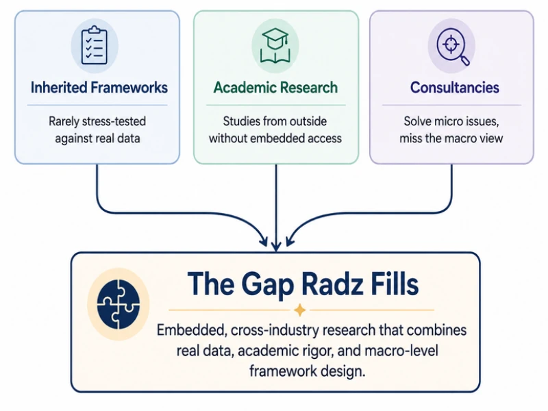
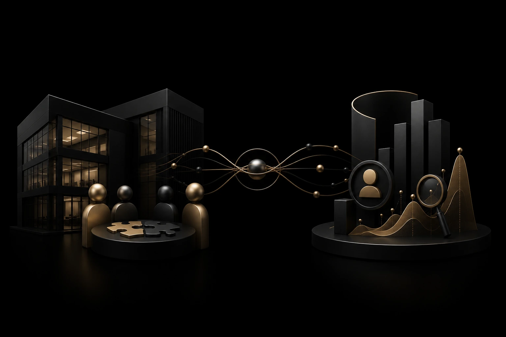

Building Research-Backed CX Frameworks Across Industries
Our Research Partnership Model aims to bring together industry expertise, academic research, and practical insights to build validated CX frameworks and processes.
Research Partnership Model Scope
Building Frameworks and Processes through Strategic Partnerships
We partner with companies, public institutions and academia to study CX challenges across industries, develop frameworks, and create practical solutions.
The Problem
Existing CX challenges fall into either industrial ecosystem issues or organizational issues.
Industrial Challenge: Sometimes the grassroots issue isn't organizational at all, it could be a broader industry-wide pattern. eg:-Team friction in adopting collaborative SaaS.
Organizational Challenge: Most CX frameworks are internal guesswork dressed up as strategy, built once, never validated, and never tested outside the company that made them.
Our Approach
Radz Designs addresses both levels through two research tracks.
Academic Partnership Track:(Addresses Industrial Challenges) We partner with academic institutions to study industry-wide patterns, using real data instead of isolated company experience, to build frameworks that hold across an entire vertical, not just one company.
Research Partnership Track:(Addresses Organizational Challenges)We embed directly with a company as their research partner, studying their specific operations to build and validate frameworks against real internal outcomes, not internal guesswork.
Outcomes
What each track produces.
Academic Partnership Track:
- A validated, industry-wide framework, tested beyond one company's walls
- A published paper or case study co-authored with an academic institution
- Recognition as the origin point of a new industry standard
Corporate Research Partnership Track:
- A proprietary framework built specifically for that company's vertical
- Validated process redesign, tested against real operational outcomes
- A published case study proving the framework in a live environment
The Need
Why is a Research Partnership Model Needed?
Here's the three main reasons for needing a research partnership model:
- Inherited frameworks are rarely stress-tested against real data
- Academic research studies from the outside without embedded access
- Consultancies mostly solve micro issues rather than working from a macro perspective
Nobody is building frameworks from the inside, validating them, and making that validation visible.

Our Methodology
How does the Research Partnership Model work?
Two research tracks, each designed for a distinct outcome.
Academic Partnership Research
- We identify a specific issue within an industry ecosystem, drawn from the use cases we study
- The issue can also be raised directly by our partner academic organization
- We study it against real data in collaboration with the academic partner
- We develop the findings into a structured framework
- We validate the framework through academic rigor
Built for institutions and researchers looking to produce credible, peer-adjacent work grounded in industry reality rather than theory alone.
Corporate Research Partnership
- We embed directly within the partner company's vertical as their research partner
- We study live operational data specific to that business, not generic industry patterns
- We develop a proprietary framework built for that company's exact problem
- We validate the framework against real internal outcomes
- We publish the findings as a case study, credited jointly with the partner
Built for companies looking to solve a live operational problem with a validated, proprietary asset rather than a generic playbook.

The Outcome
CX Predictive Frameworks
Data-driven predictive CX frameworks strengthen scalability, operational efficiency and consistent growth
Academic Partnership Research
- Helps academia and us to present papers in international conferences for helping industry verticals
- Helps institutions and researchers to publish industry-grounded case studies, and frameworks
- A repeatable structure for industry verticals for future decisions
Corporate Research Partnership
Gives Companies:
- A validated internal framework built around their own processes
- A documented case study of the transformation
- A repeatable structure for future decisions
Our Expertise
Our Capability Stack
The research, analytical, and academic capabilities behind every framework we build.
Research & Data
Behavioral Design
Framework Design
Academic & Publishing
Starting Niche
Where We're Starting, and Why
Deliberate focus now, built to expand as the track record grows.
Initial Target
Early to mid-stage FinTech & SaaS companies
Reason:
Operational flaws are still fixable at the root, rather than buried under years of legacy process.
Mode of Selection
Direct client work, not assumption
Reason:
The specific industry vertical is determined through real engagement, not decided in advance.
Constraint
Academic validation begins after the founding client cohort
Reason:
Corporate work builds the initial track record and revenue, creating the capacity to dedicate real time to academic research.
Who This Is For
Built for Builders, Backed by Research
Founders, CEOs, boards, VCs, and academicians looking to build proprietary frameworks from real-world data, validate or redesign existing company processes, and develop case studies with academic institutions.